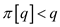
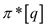
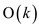
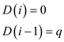
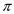
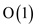

The prefix function is used to determine how the pattern P matches itself. This testing is used while finding a pattern P in text T. It helps to avoid testing useless shifts.
The is the longest prefix length of P that has proper suffix, where q is the longest repetitive sequence in P.
Suppose there is pattern.
The maximum value of q for this pattern is 7.
So, the for this pattern is 5. It is because the letter ‘ab’ repeats itself 5 times in pattern P.
, implies.
This bound is tight; consider the following example to show that:
Suppose there is a pattern string in which letter a is repeated q time that is.
Therefore,
Also, and so on
This implies
Therefore, the upper bound on the size of  is , which is the function of q .
The prefix has the information about how the pattern matches against the shifts of itself.
This information can be used to avoid testing useless shifts in
naive pattern matching algorithm or to avoid precomputation of
 for
a string matching automaton.
for
a string matching automaton.
Let the pattern P be “ababc” and the text T be “ababaabc”. Here, 4 characters have matched successfully but the 5th pattern character fails to match the corresponding text character.
The shifts in which the characters do not match are called invalid shifts.
In this figure the characters of the pattern P have matched with the text T and q denote the matching characters. In this case, the value of q is 4.
When a shift of is taken, which is a valid shift the matching will be done as follows:
and the value of k becomes 3.
Now, compare the matched patterns with itself and it is shown in the following manner:
The longest prefix of pattern P that is also a proper suffix of is .
Here the value of q in the first diagram is 4 because the four characters have matched and after shifting two positions to the right, in the second diagram the value of k is 3.
Therefore, .
The next potential shift is at the position:
Given pattern , the prefix function for pattern P is the function : such that where is the length of the longest prefix of P that is, a proper suffix of .
The complete prefix function for the pattern P: “ababaabc” is
|
i |
1 |
2 |
3 |
4 |
5 |
6 |
7 |
8 |
|
a |
b |
a |
b |
a |
a |
b |
c |
|
|
0 |
0 |
1 |
2 |
3 |
4 |
5 |
0 |
Explaination:
• The Knuth-Morris and Pratt algorithm is used as its computation time is linear and it uses an auxillary function precomputed from the pattern in time .
• The auxillary function allows the transition function to be computed efficiently.
• contains the information that is independent of a and is needed to compute .
• Thus, save a factor of in preprocessing time by computing rather than .
To summarize it all, the simple way to achieve the result is to expand the alphabet one by one and if any character does not occur in either P or T, then compute the prefix array.
Proof showing that the running time of KMP-MATCHER is
Aggregate analysis is one of the methods of amortized analysis. Amortized analysis of an algorithm involves computing of maximum total number of all operations on the different type of data structures.
In amortized analysis the average of all the operations is computed by using the formula:
Where n is the total number of operations
Thus by this method the average cost of all operations remains the same and less expensive as compared to individual operations that might have high individual costs.
Using aggregate analysis it can be obtained the tighter bound of the algorithm
The Knuth-Morris-Pratt (KMP) algorithm is one of the best string
matching algorithms with its run time of 
Now KMP algorithm needs to be analyzed using aggregate analysis and find out its run time.
For this method, consider potential function to find out the order of each operation
Amortized cost = actual cost + potential difference
Here Actual cost is equal to the Initial cost of each operation
Potential difference: tradeoff or additional cost required for the operation when compared to the previous operation
According to formula,
Where i: denotes the ith operation
Idea of Approach
A single matching operation might take order of k that is and for n operations the order would be:
Thus order is zero when n = 0 (when the string is already matched)
But, this is not a tighter bound hence the tighter bound would
be.
Now, average aggregate analysis of an operation can be found out by using:
Here the order of one operation can be found out by using the potential function and it is known for ‘n’ operations,
If the order is then order
of an operation is
By using the converse, the order of one operation is known by using potential function. As the numbers of operations are ‘n’, the order is found out by multiplying the order of one operation and the number of operations ‘n’.
1. : Initial potential = 0 as no string has been matched before it
: It can never be negative as number of strings matched can never be negative
As per KMP algorithm if:
Where, p: denotes the pattern
t: denotes the text
Then using the amortized equation
.
, as one comparison is known:
Now using the equations

2. If
It implies that n number of times the shifting needs to be done n times to find the match
Then using the amortized equation
.
, as n is the number of times until match is not found
Where j denotes number of characters unused for match as per the cases in KMP algorithm
Now using the equation,

But,
, since only comparison
So,
Hence,
3. If
That is if is greater than
Then using the amortized equation
// since no other shifts are necessary as already matched

Now using the equation,
But,
As
Since only one comparison,
So,
Since in all the three cases,
Amortized cost of i-th operation will be

Thus, cost of each operation is of.
Thus for ‘n’ operations the order would bethat
is .
.
Hence, for KMP algorithm the tighter bound is obtained by using the
aggregate analysis.
Hence proved
Running time of KMP-MATCHER using potential function
Potential method is a part or method of amortized analysis. In this method, the individual costs of the operations are to be found out by finding
Where n: number of operations
Amortized cost = actual cost + potential difference
Actual cost: initial cost of each operation
Potential difference: tradeoff or additional cost required for the operation when compared to the previous operation
According to formula,
Here i: denotes the ith operation
The Knuth-Morris-Pratt (KMP) algorithm is one of the best string
matching algorithms with its run time of
NowKMP algorithm using aggregate analysis needs to be analyzed and run time is to be found.
: Initial potential = 0 as no string has been matched before it
: It can never be negative as number of strings matched can never be negative
1. As per KMP algorithm if:
Where,
p: denotes the pattern andt: denotes the text
Then using the amortized equation
.
, as one comparison is done
Now using the equations
2. If
It implies that shift n number of times shifting is to be performed to find the match
Then using the amortized equation
.
, as n is the number of times until match is not found
Where j denotes number of characters unused for match as per the cases in KMP algorithm
Now using the equation,
But, , since only comparison
So,
Hence,
3. If
That is if is greater than
Then using the amortized equation
// since no other shifts are necessary as already matched
Now using the equation,
But,
As
Since only one comparison,
So,
Since in all the three cases,
Amortized cost of ith operation will be
As per our assumption as there are n operations
Hence, the amortized cost of KMP algorithm is
Hence proved
KMP-MATCHING
It is an algorithm used for the pattern matching. The term pattern matching means that a pattern is searched in a given text. In the pattern matching, the searching has to be done for all of the occurrences of the pattern or one of it. It can be understood better by following example.
Text: abaaaaaaaabacccaba
Pattern: aba.
In this all the sub-string which has aba has to be searched. It has a wide range of applications as-editing of the text. A number of algorithms are used for this purpose as NAÏVE algorithm, KMP-algorithm. Here would be discussed the KMP algorithm. It is named after the scientist KNUTH-MORRIS-PRATT.
It is based on the string matching machine. It has the
improvement over the naive matching algorithm. It checks that the
pattern has matched or not. In this algorithm the movement should
be from one state to the next during the matching. In the process
the record of the state has to be kept to track the change that
occurs when there is mismatch. If here is an array of length
n for the text then total time taken is.
For KMP-MATCHER algorithm refer (section 32.3 of the textbook) and here the modified form of the KMP-MATCHER is discussed in which in the line 7 the  is replaced by which is defined in a recursive way and its formulation is as described below:
In the original algorithm the string has to be tested from left to right and if during the process there is a match then the shift will take place and if there is mismatch then the shift will not be a valid one and the loop has to be tested again. And when is replaced by it does not need to be shifted again and again. So, in this way the running time increases and which reduces the time complexity.
Explanation by implementation of both versions:
Consider the text T = bacbababaabcbab
Pattern P = ababaca
Now, according to the prefix function version of the text book, the table formed for a particular pattern and step wise shift operation shown below:
Now, according to the modified prefix function version of the KMP-MATCHER (according to the question), the table formed for a particular pattern and step wise shift operation shown below:
Here in above table the value of q and k are same as in older version that is 5 and 3 but here is shift operation perform only once but in the older version that are 3.
The diagrammatic representation of shift (s), q and k for the above text and pattern and also pattern itself has some character common.
Hence, the modified algorithm is correct and it improves the time complexity.
Cyclic Rotation in strings:
The cycle that exist in the string need to be identified. Existence of cyclic rotation in the string can be observed using the following example:
“structure”
“cturestru”
“urestruct”
All the three text sequences shown above form a part of cyclic rotation.
The following algorithm is the linear time algorithm to determine whether a text T is a cyclic rotation of another string T ’:
The logic for finding cyclic rotations is as follows:
• Concatenate the string T with itself.
• Check T’ is substring of TT or not.
• If T’ is a substring of TT, then T is a cyclic rotation of T’.
• If T’ is not a substring of TT, then T is not a cyclic rotation of T’.
Algorithm:
CYCLIC-CHECK(T, T ’)
1 // T is a main string and T’ is another string
2 if length(T)! = length(T’)
3 return false
4 for i = 0 to length(TT)
5 if(TT[i] = T ’[i])
6 count = count + 1
7 else
8 count = 0
9 if count = length(T’)
10 return true;
11 else
12 return false;
Time complexity calculations:
• The line 4 in the algorithm contains a loop and iterates
2n times if length of string T is n. So it
takes a time  .
.
• The remaining lines in the algorithm take constant time. So,
it takes  .
.
• The total running time of the algorithm is .
Therefore, the total running time of the algorithm CYCLIC-CHECK( T , T ’) is .
For example:
T=“structure”
T’=“cturestru”
Both strings have the same length, so
Concatenating, TT becomes “structurestructure”
Now checking that if T’ is the substring of TT, it returns true.
In this particular example it is:
So, T is a cyclic rotation of another string T’.
To compute the transition function for the
string-matching automaton:
Transition function is generally computed in. But, the transition function can be computed in by efficiently using the algorithm.
Now, trying to find out the algorithm that can compute the transition function of a string matching algorithm having pattern p has time complexity of.
Use the hint in the problem.
Assume, that has been computed (it is the prefix function as defined in KMP algorithm).
Now, compute, using the below algorithm,
COMPUTE-PRE-FIX-FUNCTION (P)
1 len = P.length
2 let [1... len] be a new array
3 [l] = 0
4 k = 0
5 for q = 2 to len
6 while k> 0 and P[k+1] P[q]
P[q]
7 k= [k]
8 if P[k + 1] == p[q]
9 k=k+1
10 [q] = k
11 return
Now, the value needs to be calculated which is the state that has to be gone through. If the current input character is x and the stage is q and current character is P[q], control moves to next stage, which is q+1 because the character at this stage is matched.
So
Whenever the condition given above does not match, the tracing of stage having lower number p[q] is there. This makes the state before q, which is last state p [0 ... p[q]] as a suffix of p [0 ... q].
So at state the q, its output contains the outputs of state p[q]. It is because the outputs are copied to the state q. As The character p[i] is set previously, this will be copied.
Modified Algorithm:
COMPUTE_TRANSITION_FUNCTION (P, )
)
//Store the length of the string in variable m
1 len = length (P);
2 for q = 0 through m
do
{
3 for each character x in
// make increment of +1 for x, and increment of +2 for subsequent repeat
// loop to decrement. Finding minimum len+1, q+2 and store in k
4k = min (len+1, q+2);
// from here working of backward starts from q+1
5 repeat k = k-1
6 until (k) is-suffix-of' (q);
// operation of assigning the transition table occurs here
(q,
x) = k;
}
7 end for;
Return ;
Thus, the required state is got that needs to be gone through and modification part is on step6.
Complexity of the algorithm:
Step 1 and step 7 are of complexity.
Steps 2, 3, 4, 5, 6 are of
On finding the complexity throughout the algorithm the result,
On keeping a tighter bound the complexity is
Hence proved